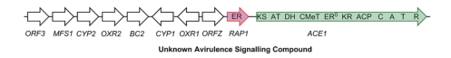

ACE1 (Avirulence Conferring Enzyme 1) of the rice blast fungus Pyricularia (Magnaporthe) oryzae is a large (about 4,035 aa) hybrid polyketide synthase-nonribosomal peptide synthetase (PKS-NRPS) with the domain architecture KS-AT-DH-CMeT-ER0-KR-ACP-C-A-T-R. Its iterative highly reducing PKS module builds a C-methylated polyketide chain from acetate units (the embedded enoyl reductase domain is inactive, and enoyl reduction is supplied in trans by the partner enzyme RAP1), and its single NRPS module condenses the polyketide with tyrosine, after which the chain is probably released by the terminal reductase domain. ACE1 is the first enzyme of a 15-gene, infection-specific secondary metabolite cluster that is predicted to produce a tyrosine-derived cytochalasan; the native end product has not been identified. ACE1 is expressed only in appressoria at the onset of host penetration and is retained in the appressorial cytoplasm rather than secreted. Rice cultivars carrying the resistance gene Pi33 recognize isolates carrying a catalytically active ACE1, so the avirulence signal is thought to be the metabolite made by the ACE1 pathway rather than the ACE1 protein itself; a KS active-site Cys-to-Ala mutant loses avirulence.
| GO Term | Evidence | Action | Reason |
|---|---|---|---|
|
GO:0003824
catalytic activity
|
IEA
GO_REF:0000002 |
MODIFY |
Summary: InterPro2GO mapping from the NRPS condensation (C) domain (IPR001242). The term is correct but uninformative. ACE1 carries a complete NRPS module (C-A-T) that attaches tyrosine to the polyketide chain built by the PKS module, which is the activity the condensation domain contributes to.
Reason: The root catalytic activity term carries no information. The C domain belongs to the single NRPS module of ACE1, and heterologous co-expression of ACE1 with RAP1 gave a tyrosine-containing amide, showing that the NRPS module condenses an amino acid onto the polyketide (PMID:29142718). Fungal PKS-NRPS hybrids with experimental data (e.g. iccA, iliA) are annotated to non-ribosomal peptide synthetase activity alongside polyketide synthase activity, so the same specific term is proposed here.
Proposed replacements:
non-ribosomal peptide synthetase activity
Supporting Evidence:
PMID:29142718
In this case it appears that tyrosine is used as the amino acid and attached to the polyketide in the same way as observed in the cases of pretenellin A 1 and preaspyridone 3.
file:PYRO7/ACE1/ACE1-uniprot.txt
ACE1 has the following architecture: KS-AT-DH-MT-KR-PCP-C-A-T-R.
|
|
GO:0004312
fatty acid synthase activity
|
IEA
GO_REF:0000118 |
MODIFY |
Summary: TreeGrafter transfer from a PANTHER node of the type I PKS/FAS superfamily. ACE1 shares the KS-AT-DH-KR-ACP chain-building domains with fatty acid synthases, but it is a PKS-NRPS whose PKS module makes a C-methylated polyketide (a heptaketide pyrone when expressed alone, a nonaketide fused to tyrosine with RAP1), not a long-chain fatty acid.
Reason: The fatty acid synthase reaction (acetyl-CoA + n malonyl-CoA to a fully reduced long-chain fatty acid) is not what ACE1 catalyses. Its products are partially reduced, methylated polyketides, and the enzyme lacks a functional enoyl reductase (PMID:29142718). The shared fold is captured correctly by polyketide synthase activity, which is used for experimentally characterized fungal PKS and PKS-NRPS enzymes (e.g. lovB, iliA).
Proposed replacements:
polyketide synthase activity
Supporting Evidence:
PMID:29142718
CC values showed intact acetate incorporations consistent with the heptaketide origin of 6.
PMID:29142718
The biosynthesis of 6 and 7 do not require an enoyl reductase step, consistent with the observation that the ACE1 ER domain is predicted to be inactive.
file:PYRO7/ACE1/ACE1-deep-research-falcon.md
The embedded ER⁰ is predicted to be catalytically inactive
|
|
GO:0004315
3-oxoacyl-[acyl-carrier-protein] synthase activity
|
IEA
GO_REF:0000002 |
KEEP AS NON CORE |
Summary: InterPro2GO mapping from the beta-ketoacyl synthase active-site signature (IPR018201). The ACE1 KS domain performs the decarboxylative Claisen condensation of an acyl chain with malonyl bound to its own carrier domain, which matches the reaction in this term. Mutating the conserved KS active-site cysteine (C183A) abolished avirulence without affecting expression or localization.
Reason: The KS partial activity is real and is supported by the C183A mutant (PMID:15319478), but it is one step of the overall polyketide synthase activity, which is the better description of what ACE1 does. Kept as a non-core, domain-level activity.
Supporting Evidence:
PMID:15319478
a universally conserved Cys residue of the KS active site is essential for its catalytic activity
PMID:15319478
These results demonstrate that the ace1 C183A : GFP allele is unable to confer avirulence.
|
|
GO:0005737
cytoplasm
|
EXP
PMID:15319478 A putative polyketide synthase/peptide synthetase from Magna... |
ACCEPT |
Summary: A functional Ace1-GFP fusion, expressed from the native promoter, was seen only in the cytoplasm of appressoria during penetration of rice and barley leaves. It stayed in the appressorium after infection hyphae emerged and was never detected outside it. ACE1 has no signal peptide.
Reason: Direct localization of a functional fusion protein (it conferred avirulence) in the native context. A cytoplasmic location fits a PKS-NRPS biosynthetic enzyme, and it is the evidence that the protein is not secreted.
Supporting Evidence:
PMID:15319478
Fluorescence of the Ace1-GFP protein was detected exclusively in the cytoplasm of appressoria
PMID:15319478
Ace1 does not display a signal peptide sequence at its N terminus and was predicted to be cytoplasmic by PSORT II software
|
|
GO:0005737
cytoplasm
|
IEA
GO_REF:0000044 |
ACCEPT |
Summary: UniProt subcellular-location mapping, derived from the same Ace1-GFP experiment that supports the EXP row.
Reason: Consistent with the experimental localization (PMID:15319478). It duplicates the EXP annotation but is correct.
Supporting Evidence:
PMID:15319478
Fluorescence of the Ace1-GFP protein was detected exclusively in the cytoplasm of appressoria
|
|
GO:0006633
fatty acid biosynthetic process
|
IEA
GO_REF:0000120 |
MODIFY |
Summary: Combined IEA from the KS active-site signature and the PKS/FAS PANTHER node. There is no evidence that ACE1 makes fatty acids. Its PKS module makes polyketide chains that are condensed with tyrosine, as the first step of a predicted cytochalasan pathway.
Reason: The KS signature is shared by fatty acid synthases and polyketide synthases and does not tell them apart. Isotope labelling and structure determination of the ACE1 products show polyketide biosynthesis (PMID:29142718), so the process should be polyketide biosynthetic process.
Proposed replacements:
polyketide biosynthetic process
Supporting Evidence:
PMID:29142718
CC values showed intact acetate incorporations consistent with the heptaketide origin of 6.
PMID:29142718
It appears likely, therefore, that ACE1 encodes a biosynthetic protein which makes a small molecule consisting of a polyketide fused to an amino acid.
|
|
GO:0016740
transferase activity
|
IEA
GO_REF:0000002 |
MODIFY |
Summary: InterPro2GO mapping from the acyl transferase domain superfamily (IPR001227), corresponding to the AT domain that loads malonyl extender units onto the carrier domain. Correct but far too general.
Reason: The AT domain is one part of the polyketide synthase module, and transferase activity describes none of what ACE1 does. The informative replacement is polyketide synthase activity, the overall activity of the PKS module that contains the AT domain (PMID:29142718).
Proposed replacements:
polyketide synthase activity
Supporting Evidence:
PMID:29142718
The 12.4 kb ACE1 gene encodes an enzyme consisting of a fungal highly-reducing polyketide synthase
|
|
GO:0016746
acyltransferase activity
|
IEA
GO_REF:0000002 |
KEEP AS NON CORE |
Summary: InterPro2GO mapping from the thiolase-like fold of the KS domain. KS condensation and AT loading are both acyl transfers, so the term is correct (UniProt gives EC 2.3.1.- for ACE1), but it is general.
Reason: Correct as a general description of the KS and AT partial reactions. The core activity is better captured by polyketide synthase activity (PMID:29142718).
Supporting Evidence:
PMID:29142718
The 12.4 kb ACE1 gene encodes an enzyme consisting of a fungal highly-reducing polyketide synthase
PMID:15319478
a universally conserved Cys residue of the KS active site is essential for its catalytic activity
|
|
GO:0031177
phosphopantetheine binding
|
IEA
GO_REF:0000002 |
KEEP AS NON CORE |
Summary: InterPro2GO mapping from the phosphopantetheine attachment site found in carrier domains. ACE1 has two carrier domains, the PKS acyl carrier protein (ACP/PCP) and the NRPS thiolation (T) domain, each of which carries a 4'-phosphopantetheine prosthetic group to which the growing chain is tethered.
Reason: Correct from the domain architecture. Binding of the covalent prosthetic group is a feature of the carrier domains rather than the biological function of ACE1, so it is kept as non-core.
Supporting Evidence:
file:PYRO7/ACE1/ACE1-uniprot.txt
ACE1 has the following architecture: KS-AT-DH-MT-KR-PCP-C-A-T-R.
|
|
GO:0044550
secondary metabolite biosynthetic process
|
IEA
GO_REF:0000118 |
ACCEPT |
Summary: TreeGrafter annotation. ACE1 is the core synthase of an infection-specific secondary metabolite gene cluster. It makes polyketide and polyketide-tyrosine products when expressed heterologously, and the predicted end product of the pathway is a tyrosine-derived cytochalasan.
Reason: Well supported by cluster analysis (PMID:18433432) and heterologous expression (PMID:29142718). Because the native product is unknown, this general term, together with polyketide biosynthetic process, is the appropriate level of specificity.
Supporting Evidence:
PMID:18433432
Analysis of the M. grisea genome revealed that ACE1 is located in a cluster of 15 genes, of which 14 are potentially involved in secondary metabolism
PMID:29142718
the likely ultimate product of the ACE1 pathway will be a member of the tyrosine-derived cytochalasans
|
Q: Should ACE1 carry any host-interaction process term? The protein stays in the appressorial cytoplasm and is not recognized itself; the Pi33-recognized signal is an unidentified pathway metabolite. Existing symbiont-side terms such as effector-mediated activation of plant hypersensitive response by symbiont (GO:0080185) are framed around an effector acting on the host, so it is unclear whether a biosynthetic enzyme of an avirulence metabolite should be annotated to them, or whether such terms should go only to a gene product whose molecule is actually perceived.
Q: What is the native cytochalasan end product of the ACE1 cluster, and is it perceived directly by Pi33 (or a Pi33-linked receptor) in rice?
Experiment: Express the full ACE1 cluster (ACE1, RAP1, ORFZ, ORF3, CYP1-4, OXR1, OXR2) in a heterologous host, or engineer constitutive expression of the cluster-specific transcription factor in M. oryzae, to isolate the mature cytochalasan, then test whether it triggers a Pi33-dependent response on rice leaves.
Type: heterologous expression and metabolite bioassay
Experiment: In vitro adenylation assays (e.g. ATP-PPi exchange or hydroxamate assays) with the excised ACE1 A domain to define its amino acid specificity directly.
Type: in vitro biochemistry
The research report should be a detailed narrative explaining the function, biological processes, and localization of the gene product. Citations should be given for all claims.
You should prioritize authoritative reviews and primary scientific literature when conducting research. You can supplement
this with annotations you find in gene/protein databases, but these can be outdated or inaccurate.
We are specifically interested in the primary function of the gene - for enzymes, what reaction is catalyzed, and what is the substrate specificity? For transporters, what is the substrate? For structural proteins or adapters, what is the broader structural role? For signaling molecules, what is the role in the pathway.
We are interested in where in or outside the cell the gene product carries out its function.
We are also interested in the signaling or biochemical pathways in which the gene functions. We are less interested in broad pleiotropic effects, except where these elucidate the precise role.
Include evidence where possible. We are interested in both experimental evidence as well as inference from structure, evolution, or bioinformatic analysis. Precise studies should be prioritized over high-throughput, where available.
The target is the rice-blast fungal ACE1, not human angiotensin-converting enzyme ACE1. The supplied UniProt identity specifies Pyricularia oryzae (synonym Magnaporthe oryzae) reference strain 70-15 and locus MGG_12447. Primary literature identifies MGG_12447 as ACE1, an approximately 12.4-kb gene encoding a highly reducing polyketide synthase fused to a nonribosomal peptide synthetase (PKS–NRPS). Its biochemical role is to assemble the polyketide–amino-acid backbone of an infection-associated, probably cytochalasan-like secondary metabolite. The strain-70-15 accession is the supplied database identity; key biochemical and infection experiments used other rice-blast isolates, notably Guy11, so their results should not be mistaken for direct measurements in 70-15. Song et al., Chemical Science, 2015; Lambou et al., PLOS Pathogens, 22 January 2024. (song2015heterologousexpressionof pages 1-2, lambou2024thebziptranscription pages 9-11, song2015heterologousexpressionof pages 2-3)
ACE1 is an avirulence-conferring enzyme, not a conventional secreted protein effector. In fungus–rice combinations involving the resistance specificity Pi33, functional ACE1 is associated with resistance to infection. The leading interpretation is that rice responds to an ACE1-dependent small molecule, rather than recognizing the large biosynthetic enzyme itself; however, neither the authentic eliciting molecule nor its mode of perception has been established. A 2024 review explicitly classifies ACE1 as a non-secreted PKS–NRPS, and the 2024 BIP1 study still calls the proposed Pi33-recognized product a possible cytochalasan derivative. Liu et al., Frontiers in Plant Science, October 2024; Lambou et al., 2024. (liu2024therolesof pages 3-4, lambou2024thebziptranscription pages 16-17)
The ACE1 domain arrangement is consistent with an iterative fungal PKS followed by one NRPS module: KS–AT–DH–CMeT–ER⁰–KR–ACP–C–A–T–R. Here KS extends an ACP-bound polyketide, CMeT introduces methyl groups, and the NRPS condensation/adenylation/thiolation machinery joins an amino-acid component. The embedded ER⁰ is predicted to be catalytically inactive; the neighboring gene RAP1 encodes a trans-acting enoyl reductase required for the experimentally observed shift toward the amino-acid-containing product. The terminal R domain has sequence features consistent with reductive product release, but its exact reaction on the authentic in-fungus substrate has not been directly established. The domain architecture is illustrated in Song and colleagues’ cluster diagram. Song et al., 2015. (song2015heterologousexpressionof pages 4-5, song2015heterologousexpressionof pages 5-7, song2015heterologousexpressionof pages 7-8, song2015heterologousexpressionof pages 2-3, song2015heterologousexpressionof media 53ff7c3f)
Experimental substrate evidence is strongest at the level of incorporated building blocks, not purified-enzyme kinetics. When ACE1 was expressed without RAP1, isotope feeding traced the resulting pyrone’s carbon skeleton to intact acetate-derived units, consistent with a heptaketide; methionine supplied its two methyl substituents, with 9.4% label incorporation at C-15 and C-16 in the reported experiment. ACE1 together with RAP1 instead yielded a structurally characterized tyrosine-containing, nonaketide-derived amide, supporting tyrosine selection by the NRPS portion in that expression system. The exact native precursor loading reaction, adenylation specificity constants and stoichiometric overall reaction have not been measured; the evidence does not justify assigning a named mature cytochalasan as ACE1’s directly isolated product. Song et al., 2015. (song2015heterologousexpressionof pages 4-5, song2015heterologousexpressionof pages 5-7, song2015heterologousexpressionof pages 7-8)
Expression of ACE1 alone yielded a polyenyl pyrone termed magnaporthepyrone; host-dependent subsequent oxidation gave 12,13-dihydroxymagnaporthepyrone (compound 6) in Aspergillus oryzae or 10,11-dihydroxymagnaporthepyrone (compound 7) in M. oryzae. A construct lacking the ACE1 NRPS portion produced the same all-polyketide pyrone, confirming that these are not evidence of peptide incorporation. The proposed regioselective epoxidation followed by hydrolysis involves other host activities and should not be annotated as an established ACE1-catalyzed reaction. Co-expression with RAP1 instead produced amide 8 (C₃₀H₄₃NO₄), a linear product resembling a cytochalasan backbone; its formation supports RAP1-dependent reductive programming and use of ACE1’s NRPS machinery, but the detailed sequence of reduction and release steps remains partly inferred. Song et al., 2015. (song2015heterologousexpressionof pages 4-5, song2015heterologousexpressionof pages 5-7, song2015heterologousexpressionof pages 7-8)
The pathway context reinforces—but does not complete—the functional assignment. ACE1 sits in an approximately 57-kb cluster of 15 secondary-metabolism genes, including RAP1, additional reductases, cytochrome P450s, and candidate cyclization/tailoring enzymes. In a separate pyrichalasan-producing Magnaporthe strain, an ACE1-cluster gene, ORFZ, functionally complemented loss of its homolog PyiE when precursor was supplied; ACE1-cluster ORF3 could likewise replace the other pathway’s putative Diels–Alderase PyiF, and ACE1-cluster CYP1/CYP3 were functional in that separate system. These are informative cross-pathway experiments, not proof that the distinct pyrichalasan PKS–NRPS, PyiS, is ACE1 or that the native ACE1 end product has been isolated. Zhang et al., Chemistry—A European Journal, January 2021; Lambou et al., 2024. (lambou2024thebziptranscription pages 9-11, zhang2021chemicalandgenetic pages 3-4, zhang2021chemicalandgenetic pages 1-3, zhang2021chemicalandgenetic pages 7-8)
The following evidence summary separates observed products from proposed pathway endpoints. (song2015heterologousexpressionof pages 5-7, lambou2024thebziptranscription pages 16-17, zhang2021chemicalandgenetic pages 3-4)
| Claim | Primary evidence or measurement | Confidence or limitation |
|---|---|---|
| Identity and architecture | Fungal ACE1/MGG_12447 is a 12.4-kb gene encoding a 4,035-aa highly reducing PKS fused to one NRPS module. The reported domain order is KS–AT–DH–CMeT–ER⁰–KR–ACP–C–A–T–R; the embedded ER is predicted inactive, while adjacent RAP1 supplies a trans-acting ER (song2015heterologousexpressionof pages 1-2, song2015heterologousexpressionof pages 2-3, song2015heterologousexpressionof media 53ff7c3f). | High. Primary sequence analysis and heterologous expression agree. G4MVZ2 and strain 70-15 are fixed by the supplied UniProt identity; many functional experiments used Guy11 or related isolates. |
| Precursor and substrate specificity | Labeling with [1,2-¹³C₂]acetate established an acetate-unit-derived heptaketide for ACE1-only pyrone products. Labeling with [methyl-¹³C]methionine marked both methyl groups, with 9.4% incorporation at C-15 and C-16. With RAP1, NMR identified a tyrosine-containing nonaketide amide, supporting tyrosine selection by the NRPS adenylation module (song2015heterologousexpressionof pages 4-5, song2015heterologousexpressionof pages 5-7, song2015heterologousexpressionof pages 7-8). | Moderate–high. Polyketide and methyl origins are directly demonstrated. Tyrosine incorporation is structurally supported in the 2015 product, but native substrate kinetics were not measured. The exogenous O-methyltyrosine used in 2021 concerned separate pathway-complementation experiments and should not be conflated with the 2015 tyrosine assignment (zhang2021chemicalandgenetic pages 3-4). |
| ACE1-only products | ACE1 expressed without RAP1 produced the polyenyl pyrone magnaporthepyrone, subsequently converted in the expression hosts into 12,13-dihydroxymagnaporthepyrone (6) or 10,11-dihydroxymagnaporthepyrone (7) by inferred epoxidation and hydrolysis. Full-length ACE1 and an NRPS-deleted construct generated the same all-polyketide product (song2015heterologousexpressionof pages 4-5, song2015heterologousexpressionof pages 5-7). | High for structures; moderate for the enzymatic route. Compounds 6 and 7 are characterized shunt products, not mature cytochalasans or the native avirulence signal. Host monooxygenase and epoxide-hydrolysis steps are inferred. |
| ACE1 plus RAP1 product | Co-expression redirected synthesis from pyrone shunts to amide 8, C₃₀H₄₃NO₄, a tyrosine-containing, nonaketide-derived linear product resembling a cytochalasan backbone. RAP1-mediated reduction is proposed to enable correct chain extension and methylation (song2015heterologousexpressionof pages 4-5, song2015heterologousexpressionof pages 5-7, song2015heterologousexpressionof pages 7-8). | High for compound structure and RAP1 dependence; moderate for detailed programming. Amide 8 is probably a reduced shunt metabolite, not a demonstrated native pathway endpoint. |
| Pi33 bioassay | Purified compounds 6 and 7 caused localized necrosis on susceptible and Pi33-containing cultivars irrespective of genotype; neither converted a virulent infection into an avirulent reaction. Amide 8 caused no symptoms and did not alter pathogenicity (song2015heterologousexpressionof pages 4-5, song2015heterologousexpressionof pages 5-7). | High. Direct rice-leaf and infection assays exclude compounds 6, 7 and 8 as the Pi33-specific elicitor under the tested conditions. |
| Cellular site and secretion | A direct Ace1–eGFP fusion was reported to remain in fungal appressoria and was not detected in primary invasive hyphae. A separate promoter–eGFP reporter showed transcription peaking near penetration, with mRNA maximal around 17 hours after inoculation; reporter fluorescence in early hyphae was attributed to soluble GFP diffusion (fudal2007expressionofmagnaporthe pages 2-4). A 2024 review classifies ACE1 as a non-secreted PKS–NRPS (liu2024therolesof pages 3-4). | Moderate. Appressorial localization is supported, but fine subcellular localization and the metabolite-export route remain unresolved. Promoter-reporter fluorescence is not ACE1-protein localization. |
| BIP1 regulation in 2024 | Expression profiling initially found 42 genes downregulated in Δbip1 appressoria; the authors summarized a curated network of 40. Nine mapped to the 57-kb, 15-gene ACE1 cluster. BIP1 bound TGACTC motifs in the shared RAP2 and ORF3 promoter; motif mutation weakened or abolished binding and ORF3 appressorium expression. ACE1/MGG_12447 and seven candidate cluster targets were downregulated during early barley infection (lambou2024thebziptranscription pages 9-11, lambou2024thebziptranscription pages 11-12). | High for transcriptional regulation. This establishes BIP1-dependent, penetration-stage cluster activation, not direct biochemical regulation of ACE1 catalysis. Deleting ACE1/SYN2 reportedly did not reduce general pathogenicity (lambou2024thebziptranscription pages 16-17). |
| Native elicitor remains unknown | Cluster architecture, ACE1/RAP1 chemistry and cross-complementation of ACE1-cluster ORFZ and ORF3 in a separate pyrichalasan pathway support a cytochalasan-like product. Nevertheless, the ACE1 cluster is active only briefly in appressoria, productive native knockout chemistry has been difficult, and no mature Pi33-eliciting molecule has been isolated (lambou2024thebziptranscription pages 16-17, zhang2021chemicalandgenetic pages 3-4, zhang2021chemicalandgenetic pages 7-8). | Moderate for a tyrosine-derived cytochalasan-like metabolite; low for an exact structure. The defensible annotation is a PKS–NRPS core enzyme for a probable cytochalasan pathway, not a fully defined reaction yielding a named native end product. |
Table: Evidence-strength summary for fungal ACE1/MGG_12447 (G4MVZ2), separating demonstrated enzymatic products and regulation from pathway inference. The authentic Pi33-eliciting metabolite and its export route remain unresolved.
The supported cellular location is the fungal appressorium, the specialized infection cell, during the onset of penetration. An earlier Ace1–eGFP protein fusion, discussed in the 2007 primary paper, was detected in appressoria but not in primary infectious hyphae. A distinct ACE1-promoter–eGFP transcriptional reporter cannot localize ACE1 protein: the authors attributed reporter fluorescence in early invasive hyphae to diffusion of free GFP from appressoria. Neither study resolves ACE1 to a specific organelle or establishes secretion of the enzyme into rice cells. Thus, intracellular appressorial biosynthesis is the defensible localization; where an eventual metabolite travels afterward remains unknown. Fudal et al., Eukaryotic Cell, March 2007; Liu et al., 2024. (liu2024therolesof pages 3-4, fudal2007expressionofmagnaporthe pages 2-4)
In Guy11 infecting barley, ACE1 transcripts first appeared at low levels around 8 hours after inoculation, peaked around 17 hours, then fell to approximately 20% of peak at 24 hours and 5% at 30 hours. Promoter activity was readily observed in appressoria on barley, onion and penetrable cellophane, but only 1–5% of appressoria on Teflon or Mylar were reporter-positive versus 50–75% on barley or onion under the reported assay conditions. Expression persisted in several mutants unable to complete penetration; it was absent in a melanin/turgor-defective buf1 mutant but could be restored by selected hyperosmotic treatments. These experiments associate induction with initiation of the penetration program, rather than requiring a plant-specific chemical signal or completed host invasion. Fudal et al., 2007. (fudal2007expressionofmagnaporthe pages 1-2, fudal2007expressionofmagnaporthe pages 4-6, fudal2007expressionofmagnaporthe pages 2-4)
A major 2024 advance identified a transcriptional input into the ACE1 pathway. Comparing wild-type and Δbip1 appressoria initially yielded 42 downregulated genes; the authors summarized a 40-gene infection-associated BIP1 network. Nine initially identified targets belonged to the 15-gene ACE1 cluster. During early barley infection, ACE1/MGG_12447 and seven candidate cluster targets were downregulated in Δbip1. The appressorial bZIP factor BIP1 bound a TGACTC motif in the shared promoter of cluster genes RAP2 and ORF3 in vitro; mutating the motif abolished ORF3’s appressorium-specific expression. This demonstrates transcriptional coordination of the biosynthetic cluster, not that BIP1 is ACE1’s catalytic partner or that the cluster product has been identified. Lambou et al., PLOS Pathogens, 22 January 2024. (lambou2024thebziptranscription pages 9-11, lambou2024thebziptranscription pages 16-17, lambou2024thebziptranscription pages 11-12)
The distinction between an avirulence phenotype and general virulence is important. The 2024 authors note that deleting ACE1/SYN2 had not produced a detectable reduction in general pathogenicity in the cited experiments. That finding does not negate ACE1’s Pi33-associated avirulence function: a pathway product can be dispensable for infection of a susceptible host while exposing the fungus to resistance in a host with the relevant recognition specificity. Purified 2015 products 6 and 7 caused local browning on both Pi33-containing and susceptible rice cultivars, without Pi33-specific resistance; amide 8 induced neither symptoms nor an avirulence conversion. Accordingly, treating any of these characterized shunt products as the authentic Pi33 signal would contradict the bioassays. Lambou et al., 2024; Song et al., 2015. (song2015heterologousexpressionof pages 4-5, song2015heterologousexpressionof pages 5-7, lambou2024thebziptranscription pages 16-17)
Research and practical use. ACE1/RAP1 expression in Aspergillus has provided a workable platform for dissecting a normally short-lived infection-stage pathway, and ACE1-cluster cross-complementation helps assign plausible downstream chemistry. In rice-blast research, fungal ACE1 status and rice Pi33 specificity are relevant to interpreting isolate–cultivar compatibility. These are research and resistance-assessment applications; the evidence reviewed here does not establish an ACE1-derived, commercially deployed crop-protection product or a chemically validated Pi33 elicitor. Resolving the authentic metabolite, its export/localization and its rice recognition mechanism remains necessary for a more precise biochemical annotation. Song et al., 2015; Zhang et al., 2021; Lambou et al., 2024. (song2015heterologousexpressionof pages 1-2, song2015heterologousexpressionof pages 4-5, lambou2024thebziptranscription pages 16-17, zhang2021chemicalandgenetic pages 3-4, zhang2021chemicalandgenetic pages 7-8)
Annotation conclusion: ACE1/G4MVZ2 is best annotated as an intracellular, penetration-stage fungal PKS–NRPS that, together with trans-enoyl reductase RAP1, builds a tyrosine-containing polyketide–peptide scaffold for a probable cytochalasan-like pathway associated with Pi33-specific avirulence. Its native final product, fully specified overall reaction and metabolite export route remain unresolved. (song2015heterologousexpressionof pages 5-7, liu2024therolesof pages 3-4, lambou2024thebziptranscription pages 16-17, fudal2007expressionofmagnaporthe pages 2-4)
References
(song2015heterologousexpressionof pages 1-2): Zhongshu Song, Walid Bakeer, James W. Marshall, Ahmed A. Yakasai, Rozida Mohd Khalid, Jerome Collemare, Elizabeth Skellam, Didier Tharreau, Marc-Henri Lebrun, Colin M. Lazarus, Andrew M. Bailey, Thomas J. Simpson, and Russell J. Cox. Heterologous expression of the avirulence gene ace1 from the fungal rice pathogen magnaporthe oryzae. Chemical Science, 6:4837-4845, Jun 2015. URL: https://doi.org/10.1039/c4sc03707c, doi:10.1039/c4sc03707c. This article has 100 citations and is from a highest quality peer-reviewed journal.
(lambou2024thebziptranscription pages 9-11): Karine Lambou, Andrew Tag, Alexandre Lassagne, Jérôme Collemare, Pierre-Henri Clergeot, Crystel Barbisan, Philippe Perret, Didier Tharreau, Joelle Millazo, Elia Chartier, Ronald P. De Vries, Judith Hirsch, Jean-Benoit Morel, Roland Beffa, Thomas Kroj, Terry Thomas, and Marc-Henri Lebrun. The bzip transcription factor bip1 of the rice blast fungus is essential for infection and regulates a specific set of appressorium genes. PLOS Pathogens, 20:e1011945, Jan 2024. URL: https://doi.org/10.1371/journal.ppat.1011945, doi:10.1371/journal.ppat.1011945. This article has 13 citations and is from a highest quality peer-reviewed journal.
(song2015heterologousexpressionof pages 2-3): Zhongshu Song, Walid Bakeer, James W. Marshall, Ahmed A. Yakasai, Rozida Mohd Khalid, Jerome Collemare, Elizabeth Skellam, Didier Tharreau, Marc-Henri Lebrun, Colin M. Lazarus, Andrew M. Bailey, Thomas J. Simpson, and Russell J. Cox. Heterologous expression of the avirulence gene ace1 from the fungal rice pathogen magnaporthe oryzae. Chemical Science, 6:4837-4845, Jun 2015. URL: https://doi.org/10.1039/c4sc03707c, doi:10.1039/c4sc03707c. This article has 100 citations and is from a highest quality peer-reviewed journal.
(liu2024therolesof pages 3-4): Xin Liu, Xiaochun Hu, Zhouyi Tu, Zhenbiao Sun, Peng Qin, Yikang Liu, Xinwei Chen, Zhiqiang Li, Nan Jiang, and Yuanzhu Yang. The roles of magnaporthe oryzae avirulence effectors involved in blast resistance/susceptibility. Frontiers in Plant Science, Oct 2024. URL: https://doi.org/10.3389/fpls.2024.1478159, doi:10.3389/fpls.2024.1478159. This article has 23 citations.
(lambou2024thebziptranscription pages 16-17): Karine Lambou, Andrew Tag, Alexandre Lassagne, Jérôme Collemare, Pierre-Henri Clergeot, Crystel Barbisan, Philippe Perret, Didier Tharreau, Joelle Millazo, Elia Chartier, Ronald P. De Vries, Judith Hirsch, Jean-Benoit Morel, Roland Beffa, Thomas Kroj, Terry Thomas, and Marc-Henri Lebrun. The bzip transcription factor bip1 of the rice blast fungus is essential for infection and regulates a specific set of appressorium genes. PLOS Pathogens, 20:e1011945, Jan 2024. URL: https://doi.org/10.1371/journal.ppat.1011945, doi:10.1371/journal.ppat.1011945. This article has 13 citations and is from a highest quality peer-reviewed journal.
(song2015heterologousexpressionof pages 4-5): Zhongshu Song, Walid Bakeer, James W. Marshall, Ahmed A. Yakasai, Rozida Mohd Khalid, Jerome Collemare, Elizabeth Skellam, Didier Tharreau, Marc-Henri Lebrun, Colin M. Lazarus, Andrew M. Bailey, Thomas J. Simpson, and Russell J. Cox. Heterologous expression of the avirulence gene ace1 from the fungal rice pathogen magnaporthe oryzae. Chemical Science, 6:4837-4845, Jun 2015. URL: https://doi.org/10.1039/c4sc03707c, doi:10.1039/c4sc03707c. This article has 100 citations and is from a highest quality peer-reviewed journal.
(song2015heterologousexpressionof pages 5-7): Zhongshu Song, Walid Bakeer, James W. Marshall, Ahmed A. Yakasai, Rozida Mohd Khalid, Jerome Collemare, Elizabeth Skellam, Didier Tharreau, Marc-Henri Lebrun, Colin M. Lazarus, Andrew M. Bailey, Thomas J. Simpson, and Russell J. Cox. Heterologous expression of the avirulence gene ace1 from the fungal rice pathogen magnaporthe oryzae. Chemical Science, 6:4837-4845, Jun 2015. URL: https://doi.org/10.1039/c4sc03707c, doi:10.1039/c4sc03707c. This article has 100 citations and is from a highest quality peer-reviewed journal.
(song2015heterologousexpressionof pages 7-8): Zhongshu Song, Walid Bakeer, James W. Marshall, Ahmed A. Yakasai, Rozida Mohd Khalid, Jerome Collemare, Elizabeth Skellam, Didier Tharreau, Marc-Henri Lebrun, Colin M. Lazarus, Andrew M. Bailey, Thomas J. Simpson, and Russell J. Cox. Heterologous expression of the avirulence gene ace1 from the fungal rice pathogen magnaporthe oryzae. Chemical Science, 6:4837-4845, Jun 2015. URL: https://doi.org/10.1039/c4sc03707c, doi:10.1039/c4sc03707c. This article has 100 citations and is from a highest quality peer-reviewed journal.
(song2015heterologousexpressionof media 53ff7c3f): Zhongshu Song, Walid Bakeer, James W. Marshall, Ahmed A. Yakasai, Rozida Mohd Khalid, Jerome Collemare, Elizabeth Skellam, Didier Tharreau, Marc-Henri Lebrun, Colin M. Lazarus, Andrew M. Bailey, Thomas J. Simpson, and Russell J. Cox. Heterologous expression of the avirulence gene ace1 from the fungal rice pathogen magnaporthe oryzae. Chemical Science, 6:4837-4845, Jun 2015. URL: https://doi.org/10.1039/c4sc03707c, doi:10.1039/c4sc03707c. This article has 100 citations and is from a highest quality peer-reviewed journal.
(zhang2021chemicalandgenetic pages 3-4): Haili Zhang, Verena Hantke, Pia Bruhnke, Elizabeth J. Skellam, and Russell John Cox. Chemical and genetic studies on the formation of pyrrolones during the biosynthesis of cytochalasans. Chemistry – A European Journal, 27:3106-3113, Jan 2021. URL: https://doi.org/10.1002/chem.202004444, doi:10.1002/chem.202004444. This article has 37 citations.
(zhang2021chemicalandgenetic pages 1-3): Haili Zhang, Verena Hantke, Pia Bruhnke, Elizabeth J. Skellam, and Russell John Cox. Chemical and genetic studies on the formation of pyrrolones during the biosynthesis of cytochalasans. Chemistry – A European Journal, 27:3106-3113, Jan 2021. URL: https://doi.org/10.1002/chem.202004444, doi:10.1002/chem.202004444. This article has 37 citations.
(zhang2021chemicalandgenetic pages 7-8): Haili Zhang, Verena Hantke, Pia Bruhnke, Elizabeth J. Skellam, and Russell John Cox. Chemical and genetic studies on the formation of pyrrolones during the biosynthesis of cytochalasans. Chemistry – A European Journal, 27:3106-3113, Jan 2021. URL: https://doi.org/10.1002/chem.202004444, doi:10.1002/chem.202004444. This article has 37 citations.
(fudal2007expressionofmagnaporthe pages 2-4): Isabelle Fudal, Jérôme Collemare, Heidi U. Böhnert, Delphine Melayah, and Marc-Henri Lebrun. Expression of magnaporthe grisea avirulence gene ace1 is connected to the initiation of appressorium-mediated penetration. Eukaryotic Cell, 6:546-554, Mar 2007. URL: https://doi.org/10.1128/ec.00330-05, doi:10.1128/ec.00330-05. This article has 94 citations and is from a peer-reviewed journal.
(lambou2024thebziptranscription pages 11-12): Karine Lambou, Andrew Tag, Alexandre Lassagne, Jérôme Collemare, Pierre-Henri Clergeot, Crystel Barbisan, Philippe Perret, Didier Tharreau, Joelle Millazo, Elia Chartier, Ronald P. De Vries, Judith Hirsch, Jean-Benoit Morel, Roland Beffa, Thomas Kroj, Terry Thomas, and Marc-Henri Lebrun. The bzip transcription factor bip1 of the rice blast fungus is essential for infection and regulates a specific set of appressorium genes. PLOS Pathogens, 20:e1011945, Jan 2024. URL: https://doi.org/10.1371/journal.ppat.1011945, doi:10.1371/journal.ppat.1011945. This article has 13 citations and is from a highest quality peer-reviewed journal.
(fudal2007expressionofmagnaporthe pages 1-2): Isabelle Fudal, Jérôme Collemare, Heidi U. Böhnert, Delphine Melayah, and Marc-Henri Lebrun. Expression of magnaporthe grisea avirulence gene ace1 is connected to the initiation of appressorium-mediated penetration. Eukaryotic Cell, 6:546-554, Mar 2007. URL: https://doi.org/10.1128/ec.00330-05, doi:10.1128/ec.00330-05. This article has 94 citations and is from a peer-reviewed journal.
(fudal2007expressionofmagnaporthe pages 4-6): Isabelle Fudal, Jérôme Collemare, Heidi U. Böhnert, Delphine Melayah, and Marc-Henri Lebrun. Expression of magnaporthe grisea avirulence gene ace1 is connected to the initiation of appressorium-mediated penetration. Eukaryotic Cell, 6:546-554, Mar 2007. URL: https://doi.org/10.1128/ec.00330-05, doi:10.1128/ec.00330-05. This article has 94 citations and is from a peer-reviewed journal.

ACE1-deep-research-falcon.md.id: G4MVZ2
gene_symbol: ACE1
product_type: PROTEIN
status: COMPLETE
taxon:
id: NCBITaxon:242507
label: Pyricularia oryzae 70-15
description: >-
ACE1 (Avirulence Conferring Enzyme 1) of the rice blast fungus Pyricularia
(Magnaporthe) oryzae is a large (about 4,035 aa) hybrid polyketide synthase-nonribosomal
peptide synthetase (PKS-NRPS) with the domain architecture
KS-AT-DH-CMeT-ER0-KR-ACP-C-A-T-R. Its iterative highly reducing PKS module builds
a C-methylated polyketide chain from acetate units (the embedded enoyl reductase
domain is inactive, and enoyl reduction is supplied in trans by the partner enzyme
RAP1), and its single NRPS module condenses the polyketide with tyrosine, after
which the chain is probably released by the terminal reductase domain. ACE1 is the
first enzyme of a 15-gene, infection-specific secondary metabolite cluster that is
predicted to produce a tyrosine-derived cytochalasan; the native end product has not
been identified. ACE1 is expressed only in appressoria at the onset of host
penetration and is retained in the appressorial cytoplasm rather than secreted. Rice
cultivars carrying the resistance gene Pi33 recognize isolates carrying a
catalytically active ACE1, so the avirulence signal is thought to be the metabolite
made by the ACE1 pathway rather than the ACE1 protein itself; a KS active-site
Cys-to-Ala mutant loses avirulence.
existing_annotations:
- term:
id: GO:0003824
label: catalytic activity
evidence_type: IEA
original_reference_id: GO_REF:0000002
qualifier: enables
supporting_entities:
- InterPro:IPR001242
review:
summary: InterPro2GO mapping from the NRPS condensation (C) domain
(IPR001242). The term is correct but uninformative. ACE1 carries a complete
NRPS module (C-A-T) that attaches tyrosine to the polyketide chain built by
the PKS module, which is the activity the condensation domain contributes to.
action: MODIFY
reason: The root catalytic activity term carries no information. The C domain
belongs to the single NRPS module of ACE1, and heterologous co-expression of
ACE1 with RAP1 gave a tyrosine-containing amide, showing that the NRPS module
condenses an amino acid onto the polyketide (PMID:29142718). Fungal PKS-NRPS
hybrids with experimental data (e.g. iccA, iliA) are annotated to
non-ribosomal peptide synthetase activity alongside polyketide synthase
activity, so the same specific term is proposed here.
proposed_replacement_terms:
- id: GO:1904091
label: non-ribosomal peptide synthetase activity
supported_by:
- reference_id: PMID:29142718
supporting_text: In this case it appears that tyrosine is used as the amino
acid and attached to the polyketide in the same way as observed in the cases
of pretenellin A 1 and preaspyridone 3.
- reference_id: file:PYRO7/ACE1/ACE1-uniprot.txt
supporting_text: 'ACE1 has the following architecture: KS-AT-DH-MT-KR-PCP-C-A-T-R.'
- term:
id: GO:0004312
label: fatty acid synthase activity
evidence_type: IEA
original_reference_id: GO_REF:0000118
qualifier: enables
supporting_entities:
- PANTHER:PTN002536364
review:
summary: TreeGrafter transfer from a PANTHER node of the type I PKS/FAS
superfamily. ACE1 shares the KS-AT-DH-KR-ACP chain-building domains with
fatty acid synthases, but it is a PKS-NRPS whose PKS module makes a
C-methylated polyketide (a heptaketide pyrone when expressed alone, a
nonaketide fused to tyrosine with RAP1), not a long-chain fatty acid.
action: MODIFY
reason: The fatty acid synthase reaction (acetyl-CoA + n malonyl-CoA to a fully
reduced long-chain fatty acid) is not what ACE1 catalyses. Its products are
partially reduced, methylated polyketides, and the enzyme lacks a functional
enoyl reductase (PMID:29142718). The shared fold is captured correctly by
polyketide synthase activity, which is used for experimentally characterized
fungal PKS and PKS-NRPS enzymes (e.g. lovB, iliA).
proposed_replacement_terms:
- id: GO:0016218
label: polyketide synthase activity
supported_by:
- reference_id: PMID:29142718
supporting_text: CC values showed intact acetate incorporations consistent
with the heptaketide origin of 6.
- reference_id: PMID:29142718
supporting_text: The biosynthesis of 6 and 7 do not require an enoyl reductase
step, consistent with the observation that the ACE1 ER domain is predicted to
be inactive.
- reference_id: file:PYRO7/ACE1/ACE1-deep-research-falcon.md
supporting_text: The embedded ER⁰ is predicted to be catalytically inactive
- term:
id: GO:0004315
label: 3-oxoacyl-[acyl-carrier-protein] synthase activity
evidence_type: IEA
original_reference_id: GO_REF:0000002
qualifier: enables
supporting_entities:
- InterPro:IPR018201
review:
summary: InterPro2GO mapping from the beta-ketoacyl synthase active-site
signature (IPR018201). The ACE1 KS domain performs the decarboxylative Claisen
condensation of an acyl chain with malonyl bound to its own carrier domain,
which matches the reaction in this term. Mutating the conserved KS active-site
cysteine (C183A) abolished avirulence without affecting expression or
localization.
action: KEEP_AS_NON_CORE
reason: The KS partial activity is real and is supported by the C183A mutant
(PMID:15319478), but it is one step of the overall polyketide synthase
activity, which is the better description of what ACE1 does. Kept as a
non-core, domain-level activity.
supported_by:
- reference_id: PMID:15319478
supporting_text: a universally conserved Cys residue of the KS active site is
essential for its catalytic activity
- reference_id: PMID:15319478
supporting_text: 'These results demonstrate that the ace1 C183A : GFP allele is
unable to confer avirulence.'
- term:
id: GO:0005737
label: cytoplasm
evidence_type: EXP
original_reference_id: PMID:15319478
qualifier: located_in
review:
summary: A functional Ace1-GFP fusion, expressed from the native promoter, was
seen only in the cytoplasm of appressoria during penetration of rice and
barley leaves. It stayed in the appressorium after infection hyphae emerged
and was never detected outside it. ACE1 has no signal peptide.
action: ACCEPT
reason: Direct localization of a functional fusion protein (it conferred
avirulence) in the native context. A cytoplasmic location fits a
PKS-NRPS biosynthetic enzyme, and it is the evidence that the protein is not
secreted.
supported_by:
- reference_id: PMID:15319478
supporting_text: Fluorescence of the Ace1-GFP protein was detected exclusively
in the cytoplasm of appressoria
- reference_id: PMID:15319478
supporting_text: Ace1 does not display a signal peptide sequence at its N
terminus and was predicted to be cytoplasmic by PSORT II software
- term:
id: GO:0005737
label: cytoplasm
evidence_type: IEA
original_reference_id: GO_REF:0000044
qualifier: located_in
supporting_entities:
- UniProtKB-SubCell:SL-0086
review:
summary: UniProt subcellular-location mapping, derived from the same Ace1-GFP
experiment that supports the EXP row.
action: ACCEPT
reason: Consistent with the experimental localization (PMID:15319478). It
duplicates the EXP annotation but is correct.
supported_by:
- reference_id: PMID:15319478
supporting_text: Fluorescence of the Ace1-GFP protein was detected exclusively
in the cytoplasm of appressoria
- term:
id: GO:0006633
label: fatty acid biosynthetic process
evidence_type: IEA
original_reference_id: GO_REF:0000120
qualifier: involved_in
supporting_entities:
- InterPro:IPR018201
- PANTHER:PTN002536364
review:
summary: Combined IEA from the KS active-site signature and the PKS/FAS PANTHER
node. There is no evidence that ACE1 makes fatty acids. Its PKS module makes
polyketide chains that are condensed with tyrosine, as the first step of a
predicted cytochalasan pathway.
action: MODIFY
reason: The KS signature is shared by fatty acid synthases and polyketide
synthases and does not tell them apart. Isotope labelling and structure
determination of the ACE1 products show polyketide biosynthesis
(PMID:29142718), so the process should be polyketide biosynthetic process.
proposed_replacement_terms:
- id: GO:0030639
label: polyketide biosynthetic process
supported_by:
- reference_id: PMID:29142718
supporting_text: CC values showed intact acetate incorporations consistent
with the heptaketide origin of 6.
- reference_id: PMID:29142718
supporting_text: It appears likely, therefore, that ACE1 encodes a
biosynthetic protein which makes a small molecule consisting of a polyketide
fused to an amino acid.
- term:
id: GO:0016740
label: transferase activity
evidence_type: IEA
original_reference_id: GO_REF:0000002
qualifier: enables
supporting_entities:
- InterPro:IPR001227
review:
summary: InterPro2GO mapping from the acyl transferase domain superfamily
(IPR001227), corresponding to the AT domain that loads malonyl extender units
onto the carrier domain. Correct but far too general.
action: MODIFY
reason: The AT domain is one part of the polyketide synthase module, and
transferase activity describes none of what ACE1 does. The informative
replacement is polyketide synthase activity, the overall activity of the PKS
module that contains the AT domain (PMID:29142718).
proposed_replacement_terms:
- id: GO:0016218
label: polyketide synthase activity
supported_by:
- reference_id: PMID:29142718
supporting_text: The 12.4 kb ACE1 gene encodes an enzyme consisting of a fungal
highly-reducing polyketide synthase
- term:
id: GO:0016746
label: acyltransferase activity
evidence_type: IEA
original_reference_id: GO_REF:0000002
qualifier: enables
supporting_entities:
- InterPro:IPR016039
review:
summary: InterPro2GO mapping from the thiolase-like fold of the KS domain. KS
condensation and AT loading are both acyl transfers, so the term is correct
(UniProt gives EC 2.3.1.- for ACE1), but it is general.
action: KEEP_AS_NON_CORE
reason: Correct as a general description of the KS and AT partial reactions.
The core activity is better captured by polyketide synthase activity
(PMID:29142718).
supported_by:
- reference_id: PMID:29142718
supporting_text: The 12.4 kb ACE1 gene encodes an enzyme consisting of a fungal
highly-reducing polyketide synthase
- reference_id: PMID:15319478
supporting_text: a universally conserved Cys residue of the KS active site is
essential for its catalytic activity
- term:
id: GO:0031177
label: phosphopantetheine binding
evidence_type: IEA
original_reference_id: GO_REF:0000002
qualifier: enables
supporting_entities:
- InterPro:IPR020806
review:
summary: InterPro2GO mapping from the phosphopantetheine attachment site found
in carrier domains. ACE1 has two carrier domains, the PKS acyl carrier protein
(ACP/PCP) and the NRPS thiolation (T) domain, each of which carries a
4'-phosphopantetheine prosthetic group to which the growing chain is tethered.
action: KEEP_AS_NON_CORE
reason: Correct from the domain architecture. Binding of the covalent
prosthetic group is a feature of the carrier domains rather than the
biological function of ACE1, so it is kept as non-core.
supported_by:
- reference_id: file:PYRO7/ACE1/ACE1-uniprot.txt
supporting_text: 'ACE1 has the following architecture: KS-AT-DH-MT-KR-PCP-C-A-T-R.'
- term:
id: GO:0044550
label: secondary metabolite biosynthetic process
evidence_type: IEA
original_reference_id: GO_REF:0000118
qualifier: involved_in
supporting_entities:
- PANTHER:PTN002536364
review:
summary: TreeGrafter annotation. ACE1 is the core synthase of an
infection-specific secondary metabolite gene cluster. It makes polyketide and
polyketide-tyrosine products when expressed heterologously, and the predicted
end product of the pathway is a tyrosine-derived cytochalasan.
action: ACCEPT
reason: Well supported by cluster analysis (PMID:18433432) and heterologous
expression (PMID:29142718). Because the native product is unknown, this
general term, together with polyketide biosynthetic process, is the
appropriate level of specificity.
supported_by:
- reference_id: PMID:18433432
supporting_text: Analysis of the M. grisea genome revealed that ACE1 is located
in a cluster of 15 genes, of which 14 are potentially involved in secondary
metabolism
- reference_id: PMID:29142718
supporting_text: the likely ultimate product of the ACE1 pathway will be a
member of the tyrosine-derived cytochalasans
core_functions:
- description: Iterative highly reducing polyketide synthase module (KS-AT-DH-CMeT-ER0-KR-ACP)
that builds a C-methylated polyketide chain from acetate and methionine-derived
units. Enoyl reduction is supplied in trans by the partner enzyme RAP1. The
enzyme acts in the cytoplasm of the appressorium during host penetration.
molecular_function:
id: GO:0016218
label: polyketide synthase activity
directly_involved_in:
- id: GO:0030639
label: polyketide biosynthetic process
locations:
- id: GO:0005737
label: cytoplasm
supported_by:
- reference_id: PMID:29142718
supporting_text: CC values showed intact acetate incorporations consistent with
the heptaketide origin of 6.
- reference_id: PMID:29142718
supporting_text: Coexpression of ACE1 with RAP1, which encodes a trans-acting ER,
changed the biosynthetic pathway.
- reference_id: PMID:15319478
supporting_text: Fluorescence of the Ace1-GFP protein was detected exclusively
in the cytoplasm of appressoria
- description: Single NRPS module (C-A-T-R) that condenses tyrosine with the
completed polyketide chain and probably releases the product reductively,
forming the polyketide-amino acid backbone of a predicted tyrosine-derived
cytochalasan. The native end product is not known. ACE1 catalytic activity is
needed for recognition by Pi33 rice, so this backbone is thought to lead to the
avirulence signal.
molecular_function:
id: GO:1904091
label: non-ribosomal peptide synthetase activity
directly_involved_in:
- id: GO:0044550
label: secondary metabolite biosynthetic process
locations:
- id: GO:0005737
label: cytoplasm
supported_by:
- reference_id: PMID:29142718
supporting_text: In this case it appears that tyrosine is used as the amino acid
and attached to the polyketide in the same way as observed in the cases of
pretenellin A 1 and preaspyridone 3.
- reference_id: PMID:29142718
supporting_text: the likely ultimate product of the ACE1 pathway will be a member
of the tyrosine-derived cytochalasans
- reference_id: PMID:15319478
supporting_text: Ace1 enzymatic activity is required for avirulence and is involved
in the synthesis of a metabolite that triggers the recognition of the avirulent
fungus by rice plants that carry the resistance gene Pi33
suggested_questions:
- question: Should ACE1 carry any host-interaction process term? The protein stays in
the appressorial cytoplasm and is not recognized itself; the Pi33-recognized
signal is an unidentified pathway metabolite. Existing symbiont-side terms such
as effector-mediated activation of plant hypersensitive response by symbiont
(GO:0080185) are framed around an effector acting on the host, so it is unclear
whether a biosynthetic enzyme of an avirulence metabolite should be annotated to
them, or whether such terms should go only to a gene product whose molecule is
actually perceived.
- question: What is the native cytochalasan end product of the ACE1 cluster, and is it
perceived directly by Pi33 (or a Pi33-linked receptor) in rice?
suggested_experiments:
- description: Express the full ACE1 cluster (ACE1, RAP1, ORFZ, ORF3, CYP1-4, OXR1,
OXR2) in a heterologous host, or engineer constitutive expression of the
cluster-specific transcription factor in M. oryzae, to isolate the mature
cytochalasan, then test whether it triggers a Pi33-dependent response on rice
leaves.
experiment_type: heterologous expression and metabolite bioassay
- description: In vitro adenylation assays (e.g. ATP-PPi exchange or hydroxamate
assays) with the excised ACE1 A domain to define its amino acid specificity
directly.
experiment_type: in vitro biochemistry
references:
- id: GO_REF:0000002
title: Gene Ontology annotation through association of InterPro records with GO
terms
findings: []
- id: GO_REF:0000044
title: Gene Ontology annotation based on UniProtKB/Swiss-Prot Subcellular Location
vocabulary mapping, accompanied by conservative changes to GO terms applied by
UniProt
findings: []
- id: GO_REF:0000118
title: TreeGrafter-generated GO annotations
findings: []
- id: GO_REF:0000120
title: Combined Automated Annotation using Multiple IEA Methods
findings: []
- id: PMID:15319478
title: A putative polyketide synthase/peptide synthetase from Magnaporthe grisea
signals pathogen attack to resistant rice.
findings:
- statement: A functional Ace1-GFP fusion is restricted to the cytoplasm of
appressoria and is not secreted, and a KS active-site C183A mutant loses
avirulence on Pi33 rice, so ACE1 enzymatic activity is required for avirulence.
supporting_text: 'These results demonstrate that the ace1 C183A : GFP allele is
unable to confer avirulence.'
reference_review:
relevance: HIGH
correctness: VERIFIED
review_notes: Full text read; source of the EXP cytoplasm annotation and the
C183A mutant evidence.
- id: PMID:12838393
title: Identification and fine mapping of Pi33, the rice resistance gene corresponding
to the Magnaporthe grisea avirulence gene ACE1.
findings: []
reference_review:
relevance: LOW
correctness: VERIFIED
review_notes: Abstract only; genetics of the rice resistance gene Pi33, no
information on ACE1 biochemistry.
- id: PMID:17142568
title: Expression of Magnaporthe grisea avirulence gene ACE1 is connected to the
initiation of appressorium-mediated penetration.
findings:
- statement: ACE1 is expressed only in appressoria at the onset of penetration,
independently of host signals.
supporting_text: only expressed in appressoria during fungal penetration into
rice and barley
reference_review:
relevance: MEDIUM
correctness: VERIFIED
review_notes: Expression timing and cell-type specificity of ACE1.
- id: PMID:18433432
title: Magnaporthe grisea avirulence gene ACE1 belongs to an infection-specific gene
cluster involved in secondary metabolism.
findings: []
reference_review:
relevance: MEDIUM
correctness: VERIFIED
review_notes: Abstract only; defines the 15-gene ACE1 secondary metabolite
cluster.
- id: PMID:29142718
title: Heterologous expression of the avirulence gene ACE1 from the fungal rice
pathogen Magnaporthe oryzae.
findings:
- statement: ACE1 alone makes a heptaketide pyrone; with the trans-ER RAP1 it makes
a tyrosine-containing nonaketide amide resembling the cytochalasan backbone.
supporting_text: Coexpression of ACE1 with RAP1, which encodes a trans-acting ER,
changed the biosynthetic pathway.
reference_review:
relevance: HIGH
correctness: VERIFIED
review_notes: Full text read; key biochemical evidence for PKS and NRPS activity.
- id: PMID:31644300
title: Investigating the Function of Cryptic Cytochalasan Cytochrome P450
Monooxygenases Using Combinatorial Biosynthesis.
findings: []
reference_review:
relevance: LOW
correctness: VERIFIED
review_notes: Abstract only; characterizes the ACE1-cluster P450s CYP1 and CYP3,
supporting the cytochalasan nature of the pathway, not ACE1 itself.
- id: file:PYRO7/ACE1/ACE1-uniprot.txt
title: UniProt entry G4MVZ2 (ACE1_PYRO7)
findings: []
- id: file:PYRO7/ACE1/ACE1-deep-research-falcon.md
title: Deep research report on ACE1 (falcon)
findings: []